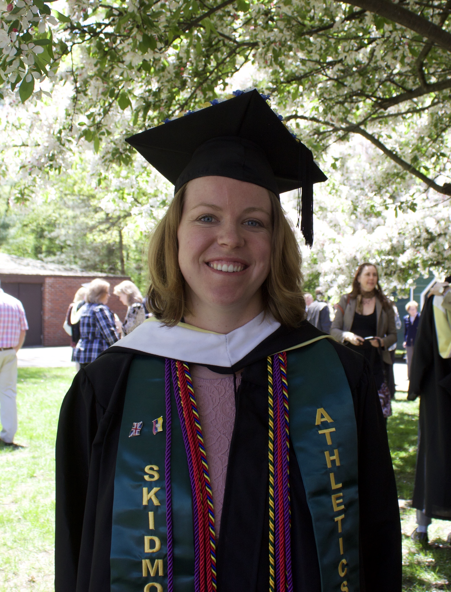
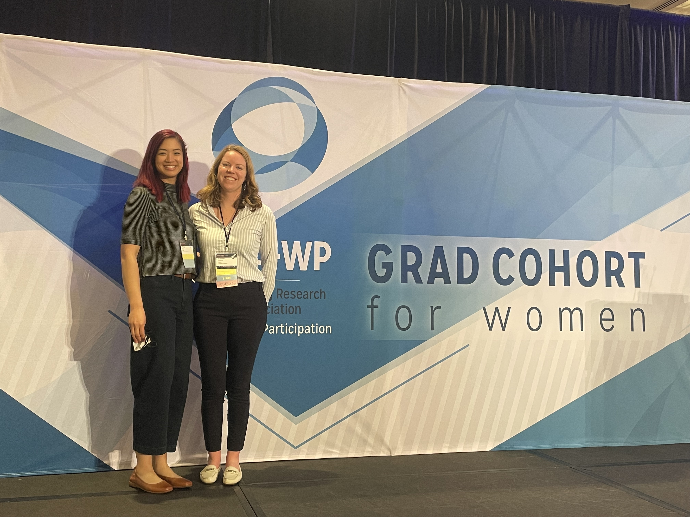
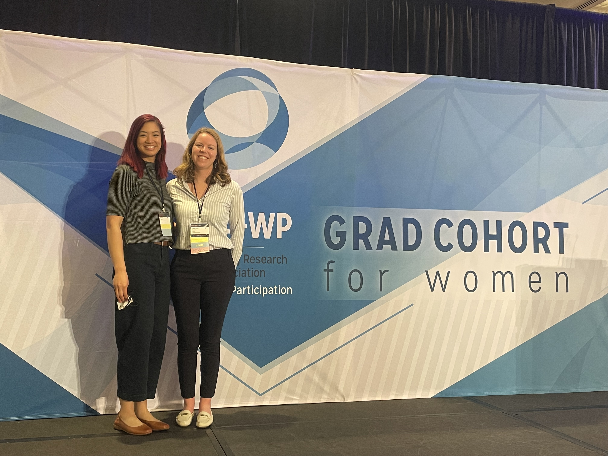
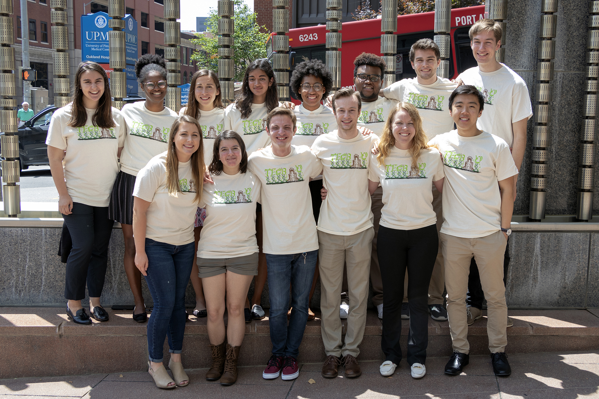
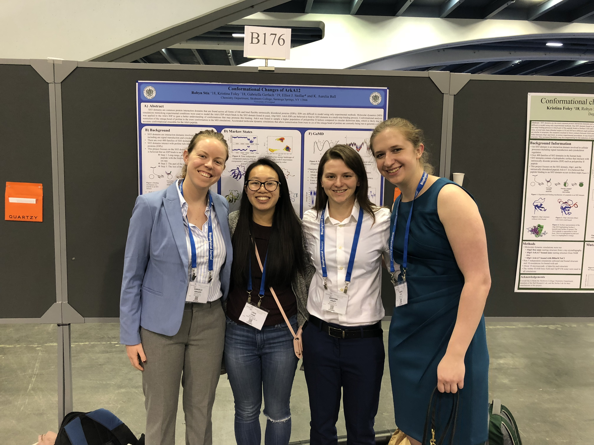

education
Computational Biology PhD student
2019 - Present
Department of Computational and Systems Biology, University of Pittsburgh, PA
Faculty supervisor: Carlos Camacho, Associate Professor of Computational and Systems Biology.
BA in Chemistry, Concentration in Biochemistry
2015 - 2019
Skidmore College, Saratoga Springs, NY
Presentations
-
"Sensitivity or specificity in protein interaction is independently regulated upon recognition: an SH2 case study," Gordon Research Conference for Intrinsically Disordered Proteins June 2022
-
"Sensitivity or specificity in protein interaction is independently regulated upon recognition: an SH2 case study," Computing Research Association Widening Participation Grad Cohort April 2022
-
"Palindromic Peptide Binding to SH3 Domain," MERCURY conference July 2019
-
"Induced fit pocket opening of MDM2 driven by anchor residue in p53," Summer Undergraduate Research Symposium July 2018
-
"Characterization of encounter complex between ArkA and Abp1SH3," Biophysical Society Meeting February 2018
 

Awards, Fellowships, and Professional Societies
-
D.E. Shaw Research Graduate and Postdoctoral Women’s Fellowship
-
NSF GRFP Honorable mention: Role of spurious LPS binding in evading host immune response
-
Fayhe Award: to most outstanding student in Chemistry at Skidmore college May 2019
-
Organic Chemistry Award: to most outstanding senior in Organic Chemistry at Skidmore College May 2019
-
Schupf Scholarship: support summer faculty-female student research in STEM summer 2017
-
Graduated Skidmore Summa Cum Laude with Chemistry Honors, a member of the Thoroughbred Society, and on the Dean's List
-
Member Phi Betta Kappa, Member American Chemical Society
Research Experience
Industry
Computational Structural Biology Intern, Genentech
Summer 2023
Developed an AlphaFold based method for strucutre predition of disulfide rich peptides. Work resulted in submission to 37th annual Conference on Neural Information Processing Systems (NeurIPS) workshop for Machine Learning in Structural Biology.
Graduate
Graduate Student in Camacho Lab
2019 - Present
The Camacho Lab focuses on modeling the physical interactions responsible for molecular recognition, and the development of new technologies for structural predictions, substrates, and supermolecular assemblies. My dissertation, proposed September 2021, will utilize a wide range of computational tools to understand protein interactions related to several human diseases.
Undergraduate
Postbaccalaureate Research Associate Skidmore Computational Biology Lab
Summer 2019
Skidmore College, Saratoga Springs, NY
Continued research related to my Honor's thesis where I explored the binding path of an intrinsically disordered peptide to a globular protein. While I was a Postbaccalaureate researcher, I also helped train and supervise two undergraduate students.

Intern Student in TECBio REU
Summer 2018
Department of Computational and Systems Biology, University of Pittsburgh, PA
Used molecular dynamics simulations to study anchor residue driven binding of p53 to MDM2. I focused on what drove the conformational changes that take place for MDM2 to go from its unbound to bound state.
Undergraduate Research Associate Skidmore Computational Biology Lab
January 2017-January 2019
Chemistry Department Skidmore College, Saratoga Springs, NY
In Professor Ball's lab, I used molecular dynamics simulations to study the binding pathway and interactions that lead intrinsically disordered peptides to specifically bind their globular partners.
